항공모함의 화장실 이야기
게시: 2022-09-08T06:30:22+09:00
<소변기를 제거한 항공모함>
최신예 항모 USS Gerald R. Ford (CVN-78, 10만톤, 30노트)에는 더 이상 증기 캐퍼펄트도 없지만 없어진 것이 또 하나 있음. 바로 남자 화장실의 소변기(urinal).
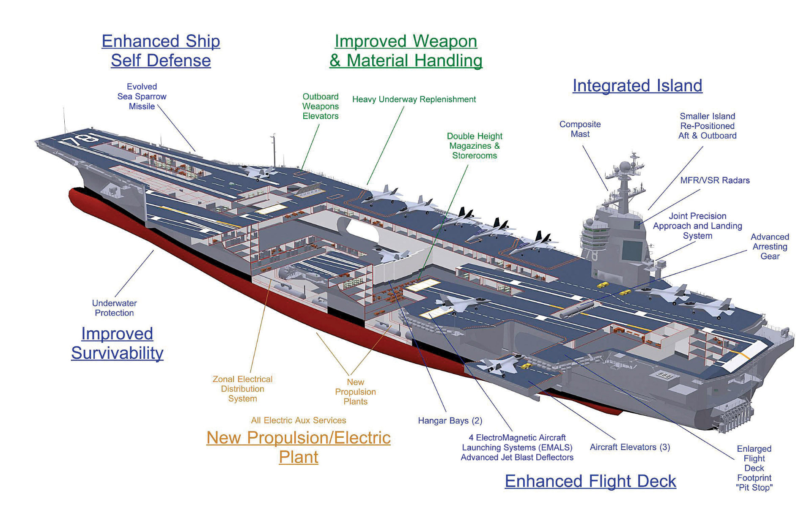
소변기를 없앤 이유는 gender neutral한 화장실을 만들기 위해. 이젠 화장실에서도 여성 평등이냐 이것도 꼴페미들의 난동 때문이냐라는 볼멘 소리가 나올 것 같지만 그건 아님.
미해군에서 여성 비율은 지상근무 포함 전체 해군 수병 중 약 18%에 불과. 그러나 항모에는 여러 수병들이 사용하는 숙소마다 화장실이 붙어 있음.
그런데 여태까지처럼 그걸 일일이 소변기가 붙어 있는 남성용 화장실과 소변기가 없는 여성용 화장실로 붙박이 구분을 해놓았더니, 도중에 남녀 비율이 변하든 단순히 일부 여성 수병들의 숙소를 바꾸든 할 때마다 굉장히 골치가 아팠다고. 이번에 그 문제를 완전히 해결하기 위해 uni-sex 화장실을 만든 것.
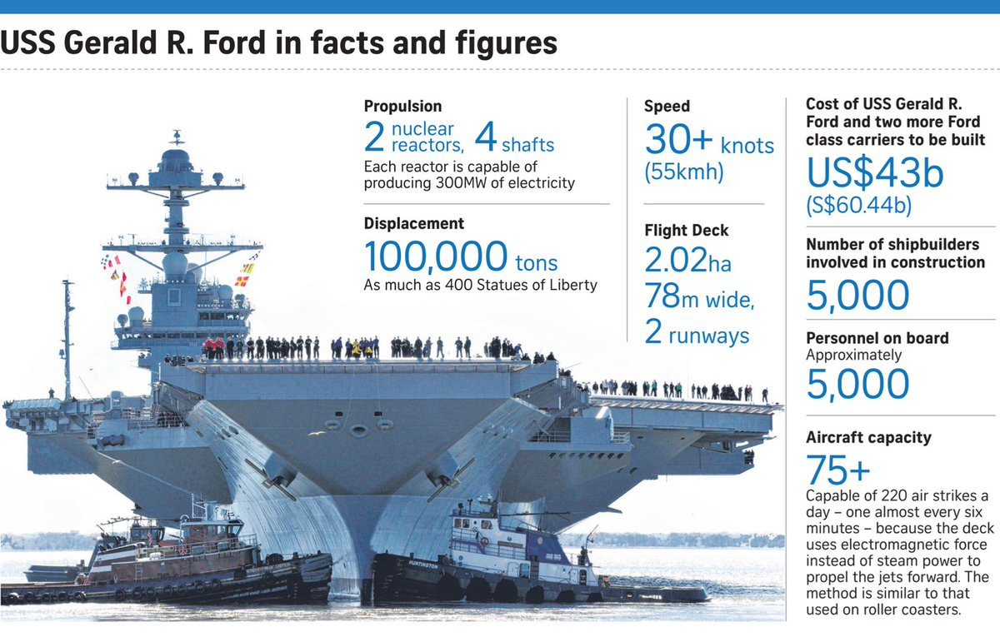
그러나 벌써부터 부작용에 대한 걱정이 나오고 있음.
(1) 일단 남자들의 조준(?)은 영 시원치 않아서 좌변기 안에 제대로 명중시키지 못하고 좌우로 떨어질텐데, 결국 바닥에 소변이 흥건히 흘러 악취가 진동할 것이라는 것.
(2) 그런 불쾌한 사태를 막으려면 남성 수병들도 앉아서 쉬를 해야 하는데, 아무리 지시해도 걔들이 그럴 것 같지는 않다는 것. 실제로도 서서 쉬하는 것에 비하면 변기 시트에 앉아서 쉬하는 것이 위생상 좋을 것 같지는 않다고.
(3) 게다가 소변기 2개 놓을 자리에 좌변기는 1개 정도 밖에 못 놓는데다, 반대로 소변기에서 일 보는 것에 비해 좌변기에서 일을 보는 것은 아무래도 시간이 약간이라도 더 걸리기 마련이니 결국 화장실이 항상 붐비게 될 것.
현재까지는 이 최신예 수퍼캐리어가 전체 미해군에서 유일하게 소변기가 없는 항모라고. 앞으로 어떻게 될지는 두고 볼 일.
<미해군 핵항모의 작전 가능 시간은 36시간?>
미해군 함정의 오폐수 처리 규정을 보다 보니, 대부분의 수상함정은 Type III MSD (Marine Sanitation Device)를 사용. 즉, 뭔가 화학처리든 발효처리를 하지 않고 그냥 오폐수를 담아만 두는 오물 탱크만 쓰는 것.
그런데 그런 오물 탱크이 무한정 클 수는 없는 법. 미해군 함정에서 쓰는 오물 탱크의 크기는 200갤런에서 50,000갤런까지 다양하긴 한데, 각 함정은 기본적으로 12시간 이상을 버틸 용량을 갖춘다고. USS San Antonio (LPD-17)같은 강습상륙함은 1천명의 인원에 대해 36시간을 버틸 수 있고, 대충 항모도 이 정도인 듯.
아니, 그러면 핵항모라고 해도 36시간 이상은 작전이 불가능한 것 아닌가?
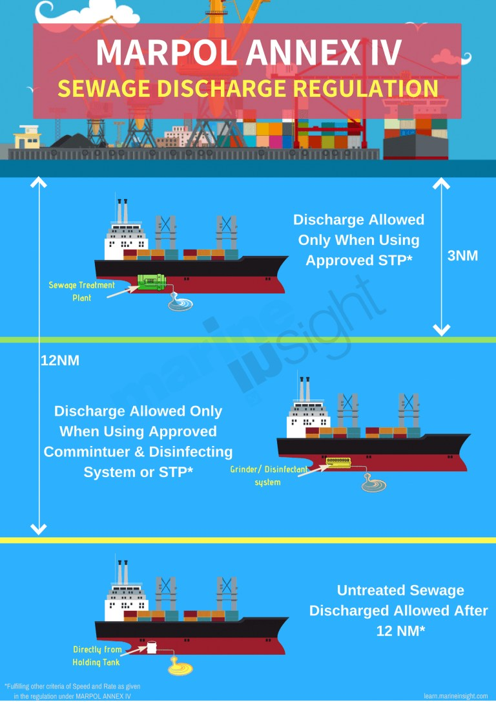
미해군 함정들이 모든 오폐수를 항구에서 돈 내고 처리하는 것은 아님. 이런 오폐수 처리 규정은 2003년에 발효된 MARPOL ANNEX IV 라는 국제 협약에 따르는데, 이에 따르면 육지에서 12해리(22.2km) 이상 떨어진 곳에서는 처리안된 오폐수도 바다에 버릴 수 있다고. 물론 버리는 것도 한꺼번에 버려서는 안되고 속도 및 배의 건현(draft, 수면에서 갑판까지의 높이) 등에 따라 아래의 공식으로 정해진 분량만 조금씩 버려야 함.
DRmax = 0.00926 V D B 여기서: DRmax is maximum permissible discharge rate (m3/h) V is ship’s average speed (knots) over the period D is Draft (m) B is Breadth (m)
결국 미해군 함정은 긴 원양 항해 중 생겨난(?) 오폐수는 그냥 방출하는 것이고, 항구나 연안 항해 중에 생겨난(?) 오폐수만 항구에서 돈 내고 처리하는 것. 그 비용은 얼마나 들까? 아래 표는 2006년 미해군 항모가 말레이지아 클랑 항에 3박4일 정박했을 때 지불한 비용 내역인데, 주차비에 해당하는 wharfage에 거의 육박하는 금액을 정화조 청소비로 냄.
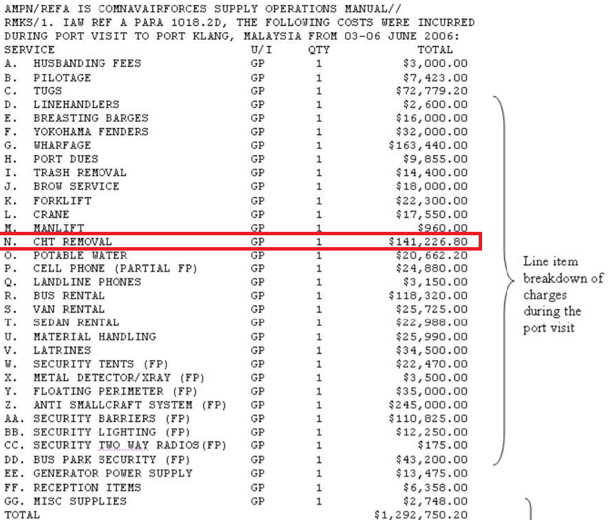
저 표에서 CHT란 Sewage Collection, Holding, and Transfer를 뜻함.
<Gray water와 Black water>
미해군 함정들, 특히 항모는 그냥 존재 자체로 돈먹는 하마. 가령 아무 것도 안하고 바다에 떠있기만 해도 승조원들의 월급으로 거액의 돈이 들어감. 또 그 승조원들이 먹는 음식 뿐만 아니라 그들이 생성(?)해내는 오폐수 처리에도 돈이 무진장 들어감. 특히나 환경 문제 때문에 그런 오폐수 처리 비용은 갈 수록 증가하는 편.
위에서 본 것처럼, 한번 항구에 들러서 정화조 처리하는 비용이 12만불 정도 (2006년 기준, 지금은 훨씬 늘었을 듯). 미해군 핵항모는 한번 임무 항해에 나설 때마다 대략 30일~45일마다 한번씩 항구에 들러 승조원들 휴식 기회도 주는 모양인데 그때마다 정화조 처리 비용으로만 12만불씩 쓴다면 매우 아깝지 않겠나.
그래서 미해군에서는 함정용 화장실 및 정화조 연구에도 열심 (사진1,2). 함정에서 발생하는 오폐수에는 gray water와 black water가 있는데 gray water는 샤워한 물, 설거지 물, 병사들 소변 등이고 black water는... 정확하게는 brown water 그거임.
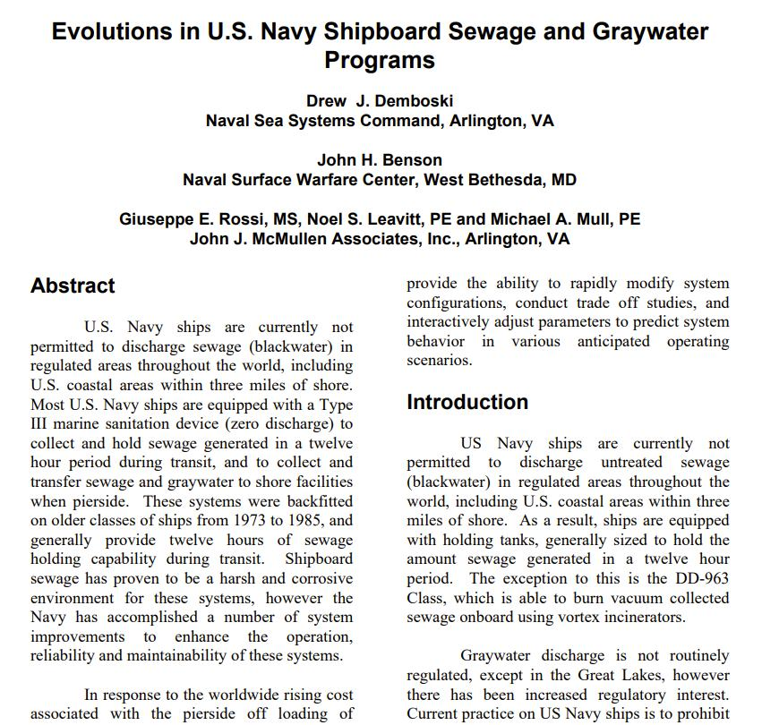 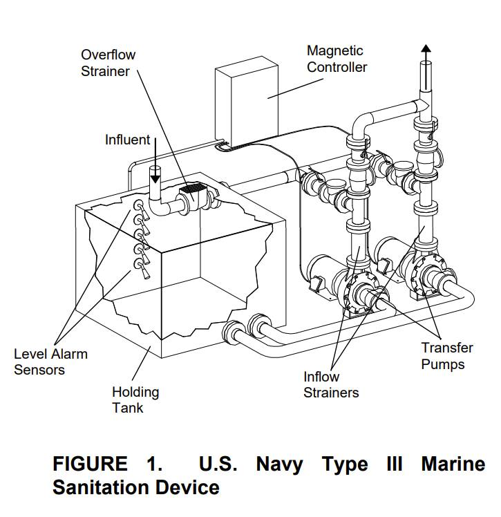
그 중에서도 처리에 돈이 많이 들어가는 것이 바로 black water. 이걸 줄이는 것이 비용을 줄이는 길이자 애국하는 길이고 미해군을 강하게 만드는 길.
그렇게 black water 감축을 연구하다 만들어낸 것이 바로 비행기에서 사용하는 것 같은 vacuum toilet. 기존의 black water 대부분은 응아라기보다는 응아와 함께 내려버리는 수세식 화장실의 물. 그런데 진공식 화장실은 기존 수세식 화장실보다 물 사용량이 대략 1/20 정도 밖에 안 된다고. 그러니 진공식 화장실을 쓰면 비용을 절감할 수 있는 것!
게다가 진공식 화장실을 쓰면 기존 함정 설계시 고려해야 하는 것, 즉 오물 배관이 항상 약간씩 아래로 경사지게 만들어야 하는 귀찮은 제약 사항도 없앨 수 있고 아주 좋았다고.
그러나 현실은....
<부시와 포드의 동병상련>
최후의 니미츠급 항모인 USS George H.W. Bush (CVN-77, 아래 사진1)과 최초의 포드급 항모인 USS Gerald R. Ford (CVN-78, 아래 사진2)는 연달아 건조된 가장 최신의 항모들답게 더 오래된 항모들에 비해 공통적으로 혁신된 부분이 있음. 바로 새로운 vacuum toilet. 민간 여객기에서 쓰는 것과 같은 형태의 진공 흡입식 좌변기. 오폐수의 양을 크게 줄여주어 환경 보호에도 좋고 미해군의 정화조 처리 비용도 감축해주는 매우 좋은 혁신.
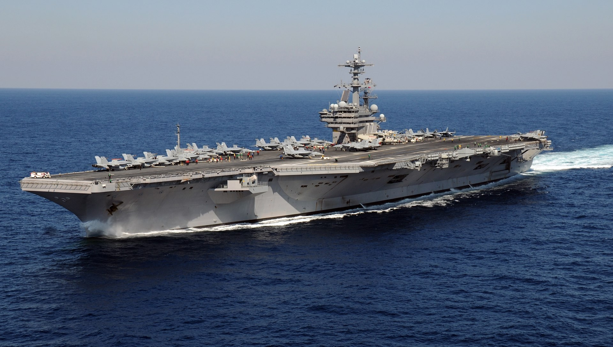 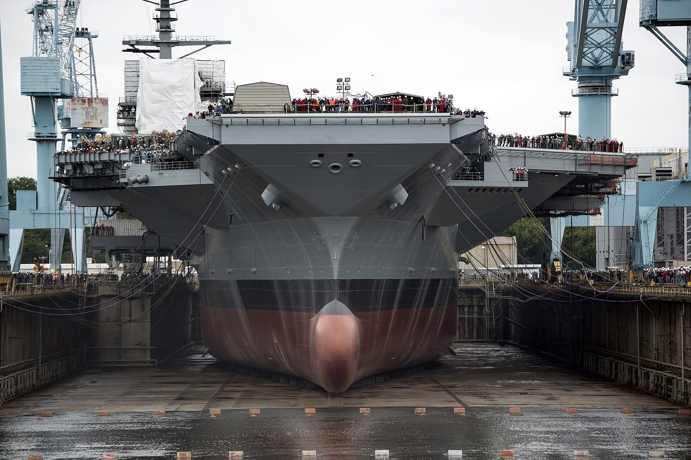
그런데 이게 말썽.
USS George H.W. Bush에는 약 4500명의 승조원을 위해 총 432개의 좌변기가 있는데, 2009년 처녀 항해를 할 때부터 이 모든 좌변기가 하나도 빼지 않고 최소한 2번씩 고장을 일으켰고 평균 1주에 25번씩 고장이 신고되었다고. 이후로도 부시의 이 고질적인 '화장실 막혔어요' 문제는 널리 알려져 이 항모의 승조원들은 화장실에 안 가고 빈 병 같은 것에 쉬를 본 뒤 기회가 있을 때 뱃전에서 던진다든지 하는 꼼수를 부리기 시작했고 이는 당연히 이런저런 위생상의 문제를 낳아서 그냥 웃어 넘길 일이 아니게 되었다고.
매해군 당국은 이 vacuum toilet에는 아무 문제가 없으며 단지 승조원들이 비닐이나 음식, 생리대, 옷가지 등등 온갖 넣어서는 안되는 것들을 다 변기에 쑤셔 넣는 바람에 벌어진 일이라는 입장이지만 아무튼 사태는 심각.
근데 이렇게 막힌 화장실을 결국은 뚫어야 하는데 이 진공식 화장실 파이프 라인 깊숙한 곳에 막힌 무언가를 뚫기 위해서는 특수업체의 산성액(acid)을 이용한 청소를 해야 하는데, 이거 한번 할 때마다 약 5억원 (40만불)이 든다고.
미정부 회계청(General Accountability Office)에서는 이 5억원짜리 화장실 '뚫어' 서비스가 얼마나 자주 필요한지 아직 산정을 못하고 있다고 함.
<왜 화장실을 head라고 부르나> 아직까지도 군함에서는 화장실을 head라고 부른다고. 이건 범선 시대에 나온 개념 때문인데, 당시 군함이나 상선의 경우, 난간에 간단한 구멍 뚫린 좌석이 있었고, 그게 화장실. 그렇게 뱃머리에 있다보니 그런 화장실을 'head'라고 부름. (그림1)
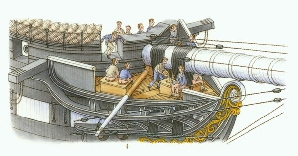
그런데 당시 범선은 이물에 조각상을 붙이는 등 (그림2) 나름 이물의 모양새에 꽤 신경을 썼는데 왜 뱃고물이나 현측이 아니라 이물에 화장실을 두었을까?
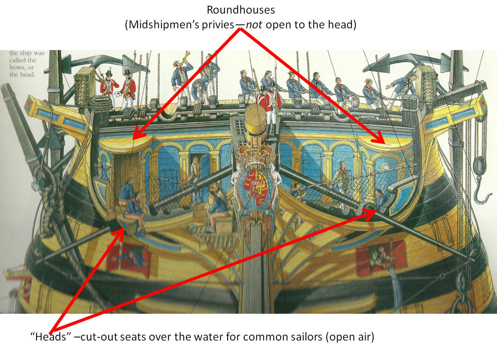
이유는 바람 때문. 당시 범선의 원리상, 배가 앞으로 활기차게 달리고 있다는 것은 당연히 바람이 배의 뒤쪽에서 불어오고 있다는 뜻. 그러므로 고물에 화장실을 둔다면 선원들이 응아한 것이 바람에 밀려 뱃전에 척 들러붙는 끔찍한 사태가 발생. 이물에 둔다면 바람에 밀려 바닷물 속으로 텀벙 들어감. 현측에 둘 수도 없음. 당시 범선은 갑판이 좁고 아래로 내려갈 수록 두께가 점점 넓어지는 tumblehome 방식 (그림3)이라서 현측에 화장실을 두었다간 큰일남.
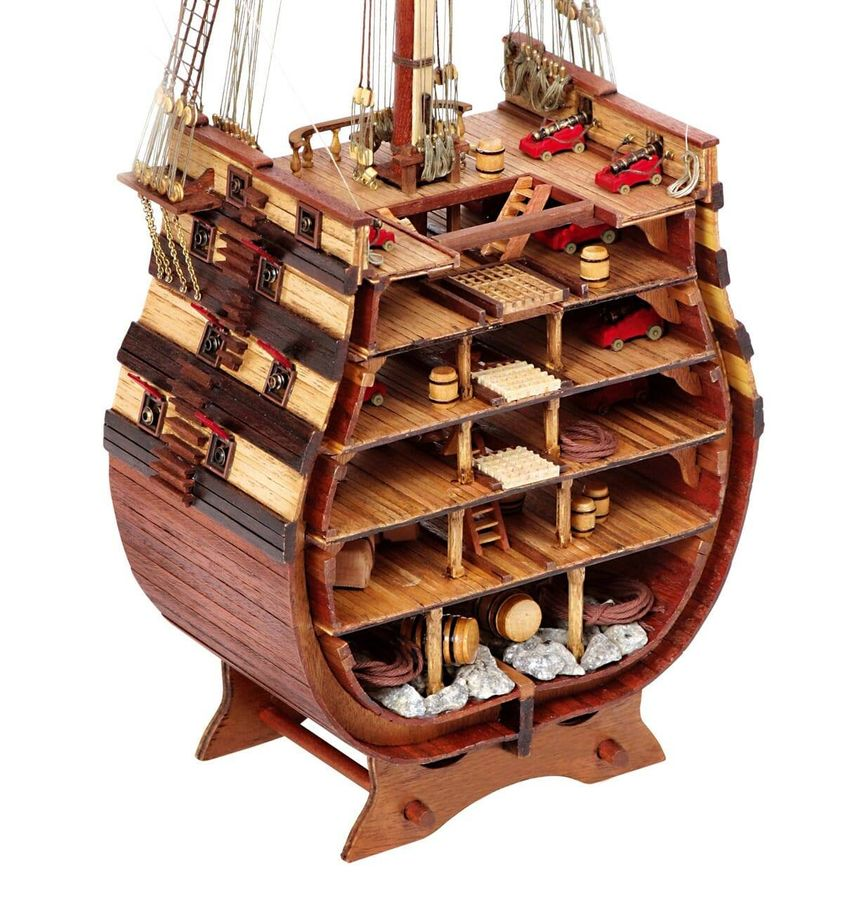